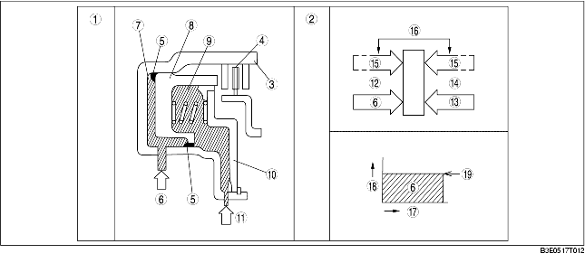

När kopplingstrycket inte ligger på
• När kopplingstrumman roterar, kommer centrifugalkraften att verka på oljan i kopplingskammaren och trycka mot kolven. Centrifugalkraften kommer emellertid även att verka på oljan och fylla centrifugalbalanskopplingens kammare så att kolven trycks tillbaka. Resultatet av detta blir att de två krafterna tar ut varandra så att kolven är kvar i sitt läge och att inkopplingen förhindras.
När kopplingstrycket ligger på
• När kopplingstrycket läggs på kopplingskammaren, kommer kopplingstrycket att ta överhand över oljetrycket och fjäderkraften på den andra sidan i centrifugalbalanskammaren och trycker kolven så att kopplingen kopplar in. Eftersom den centrifugalkraft som verkar på kopplingstrycket i kopplingskammaren tas ut av en annan kraft som verkar på centrifugalbalanskopplingens kammare, kommer påverkan av den centrifugalkraft som skapas i kopplingstrummans rotation att elimineras. Som ett resultat erhålls ett stabilt kolvtryck i alla varvtalsområden så att mjukare växlingar kan genomföras.

.